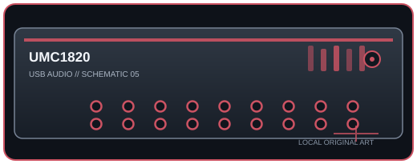

[ INDIVIDUAL COMPONENT // SOUND ]
Behringer U-PHORIA UMC1820
A rackmount USB interface offering eight mic preamps, extensive analog I/O, ADAT/S/PDIF expansion, and MIDI.

IDENTIFICATION: Manufacturer/model: Behringer UMC1820 (manufacturer model code P0B2J). Verify the full model and hardware/firmware revision on the unit; similarly named generations may have different ports, drivers, or channel counts.
Specifications
| Catalog subcategory | USB audio interfaces |
|---|---|
| Model / SKU identity | Behringer UMC1820 (manufacturer model code P0B2J); model-level identity, not a retailer bundle SKU. |
| Analog, digital I/O and host channels | 18-in/20-out maximum over USB: eight analog combo inputs with MIDAS-designed preamps, ten analog line outputs, optical ADAT/S/PDIF digital I/O and MIDI DIN. Optical channel count/format depends on sample rate and selected protocol. |
| Conversion, sample rate and bit depth | 24-bit; 44.1, 48, 88.2, or 96 kHz. S/MUX reduces the number of optical channels at higher rates. |
| Mic preamps / phantom power | Eight combo mic/line preamps with a shared +48 V phantom-power switch for condenser-microphone operation; confirm the global phantom state before connecting unbalanced or non-tolerant gear. |
| USB generation / class compliance | USB 2.0 Type-B connection; externally powered by its supplied power adapter (not bus-powered). Mac OS X is USB Audio class-compliant; Windows requires the Behringer ASIO driver for low-latency use. |
Drivers, host compatibility & latency
- Windows requires the official ASIO driver; macOS uses Core Audio without an additional driver. Linux behavior depends on the host USB-audio stack. Verify current OS support in the manufacturer downloads.
- The interface provides direct monitoring, but DAW round-trip delay is host/driver/buffer dependent. Eight channels plus ADAT demand adequate USB bandwidth; use the correct ASIO driver and larger buffers if recording glitches.
- For predictable recording, match the interface and DAW sample rates, select the model-specific manufacturer driver where required, test the intended buffer under real session load, and retain a higher-buffer fallback for dense projects.
Identification and preservation notes
Photograph the underside model label and connector panel; record serial/model identifiers, revision, firmware, included power supply, optical mode, and installed driver version. Do not infer channel count or supported sample rate from a connector or product-family name alone.
Sources & further reading
- Behringer — UMC1820 product and downloadsManufacturer model listing, downloads, and published feature/specification data.
- Music Tribe — UMC1820 datasheet (PDF)Manufacturer-hosted quick-start guide and technical documentation.
Manufacturer documentation is the authority for exact revisions and supported hosts. Verify regional SKU and operating-system support against the physical unit.